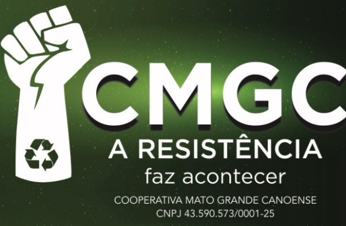
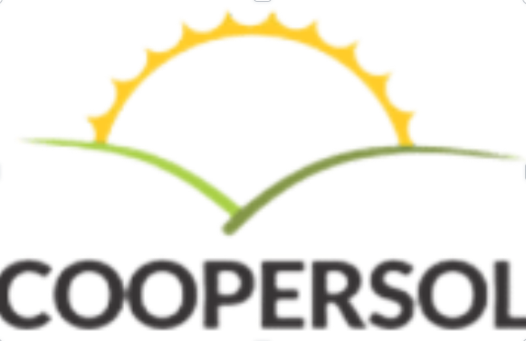

Canoas Recicla com a Gente
Projeto de educação ambiental em parceria com a Apoena Socioambiental e apoio da Unilasalle, do qual a maioria das cooperativas passou a fazer parte a partir de 2022.
Coleta seletiva de Canoas / RS
Entre galpões alugados, enchentes, incêndios de telhado e prêmios federais, oito grupos de catadoras e catadores construíram, cada um à sua maneira, décadas de organização, renda e cuidado ambiental em Canoas.
Nossa rede
Cada cooperativa tem sua origem — uma igreja, um clube de mães, um lixão a céu aberto, uma remoção de moradores de um dique. Mas de uns anos para cá, seus caminhos passaram a se cruzar: no contrato de coleta seletiva compartilhada com a Prefeitura de Canoas, nas capacitações da Unilasalle e, mais recentemente, em duas frentes que aparecem na história de quase todas elas.
Projeto de educação ambiental em parceria com a Apoena Socioambiental e apoio da Unilasalle, do qual a maioria das cooperativas passou a fazer parte a partir de 2022.
Projeto com fomento da Petrobrás que, a partir de 2025, tem trazido galpões novos, caminhões, prensas, esteiras e cursos de capacitação para reconstruir o que a enchente de 2024 destruiu.
Cooperativa

A CMGC nasceu em 2019 do desmembramento de um grupo já existente e conquistou sua independência com a Permissão de Uso de uma área pública em 2022. Desde então, cerca de 30 cooperados e cooperadas se dedicam à coleta seletiva, à reciclagem e à educação ambiental em Canoas.
Em 2022 a cooperativa passou a integrar a Coleta Seletiva de Canoas e o projeto Canoas Recicla com a Gente. Hoje opera em um espaço alugado no bairro Harmonia, enquanto aguarda a construção de um galpão novo na área concedida pelo município, no bairro Mato Grande — o mesmo território onde sua história começou.
Cooperativa

Tudo começou em 1999, quando um grupo ligado à Pastoral da Criança e da Juventude e ao Movimento de Mulheres de Canoas se preocupou em qualificar jovens para o trabalho. Sem adesão dos jovens, seis mulheres seguiram sozinhas e fundaram, em outubro de 2000, a ARLAS — a associação que deu origem à cooperativa.
No início, a triagem era feita em uma garagem de 9 m². Em 2002, a comunidade e parceiros conquistaram recursos do Orçamento Participativo Estadual e do FAT para erguer um galpão de 570 m². A Cooarlas se formalizou como cooperativa em 2009, com 20 sócias vindas da ARLAS, e no ano seguinte entrou para a coleta seletiva compartilhada de Canoas.
Mesmo sem ser diretamente inundada em 2024, trabalhou com superlotação de resíduos durante a enchente. Em seguida, o projeto Conexões Sustentáveis trouxe caminhão, prensa, esteira e mesas de triagem novas.
Cooperativa

Entre 1976 e 2001, catadores trabalhavam de forma individual e informal no antigo lixão da cidade, na Fazenda Guajuviras, expostos ao sol, à poeira e ao lodo, disputando resíduos direto dos caminhões. Foram 25 anos sem qualquer infraestrutura.
A proibição nacional do trabalho a céu aberto em aterros, em 2005, levou a Prefeitura a remover o grupo do lixão e ceder um espaço coberto. A virada veio em 2009, com a incubação pela Unilasalle, e em 2010 nasceu oficialmente a Cooperativa de Reciclagem Renascer — nome que remete à ave Fênix estampada na fachada do galpão, símbolo de "renascer das cinzas".
Ao longo da década seguinte vieram o primeiro caminhão (2012), esteira e balança digital (Caminho das Águas), um galpão de madeira de 250 m² (2014) e o prêmio nacional Pró-Catador (2017). Hoje, sob autogestão e liderança majoritariamente feminina, a cooperativa faz a triagem mensal de 40 a 60 toneladas de resíduos e acolheu cooperados de outras cooperativas durante a enchente de 2024.
Cooperativa

A Coopcamate integra a rede de cooperativas de reciclagem de Canoas, atuando na triagem e no reaproveitamento de materiais recicláveis e na geração de trabalho e renda para seus cooperados.
Cooperativa

A Coopermag faz parte da rede de reciclagem de Canoas, contribuindo para a coleta seletiva, a separação de resíduos e o fortalecimento da economia solidária.
Cooperativa

Surgiu em 2014 a partir das obras da Rodovia do Parque (BR-448), quando moradores realocados do dique para casas de passagem no Lot Prata se uniram a catadores para fundar uma associação. Com apoio da Prefeitura e da Denit para o espaço e o pavilhão, a cooperativa foi fundada — mas por anos funcionou sem contrato com o município, vivendo apenas de doações de materiais recicláveis de outras cooperativas.
Uma nova coordenação, a partir de 2020, regularizou a documentação. Em 2022, junto com a CMGC, a Coopersol e a Coopertec, a Mãos Dadas assinou contrato com a Prefeitura para a coleta seletiva compartilhada e passou a receber capacitação pelo Canoas Recicla com a Gente.
Em 2024, ficou 28 dias submersa pela enchente. Hoje segue reconstruindo suas atividades por meio de parcerias e projetos.
Cooperativa

Nasceu em 2003 como Associação Sol Nascente, no Parque Industrial Jorge Lanner, separando resíduos da construção civil. Entre 2009 e 2017 chegou a reunir mais de 40 cooperados, mas em 2018 precisou deixar o local quando uma licitação repassou a operação a uma empresa privada.
Depois de passar por galpões alugados e receber capacitação da Prefeitura, o grupo se formalizou como cooperativa em 2022, com 20 pessoas, e entrou para a coleta seletiva de resíduos sólidos do município com equipamentos alugados.
Após a enchente de 2024, os processos de gestão foram reforçados. Em 2026, o projeto Conexões Sustentáveis deve entregar paleteira, esteira, prensa, caminhão, mesa de triagem, carrinho de carga e balança, além de um novo galpão a partir da captação de projetos sociais.
Cooperativa

Nasceu em 2013 da constatação de que Canoas, cidade de cerca de 390 mil habitantes, não tinha alternativa adequada para o descarte de equipamentos eletroeletrônicos. Em 2014, a retirada de duas toneladas de lixo eletrônico de um terreno baldio deixou clara a urgência do problema.
Além da coleta, a cooperativa investiu em campanhas, palestras e até um pequeno museu de eletrônicos, mostrando a evolução tecnológica e reforçando a importância do descarte correto. Foi só a partir de 2020 que a Coopertec ganhou espaço e passou de 200 m² para 2.400 m², trocando um simples reboque por três veículos de grande porte.
Hoje reúne em média 11 cooperados — entre os fundadores, Rogério Demétrio Vieira e José Crispim Soares — e oferece coleta totalmente gratuita de eletroeletrônicos para pessoas físicas e jurídicas, agendada por telefone ou redes sociais.
Em resumo
A enchente de 2024 atravessou quase todas essas trajetórias — e também as uniu na reconstrução. Antes disso, foram décadas de trabalho manual, contratos conquistados e perdidos, temporais e incêndios, até chegar aos apoios que hoje sustentam a coleta seletiva de Canoas.
cooperativas ativas na coleta seletiva de Canoas
ano de origem da cooperativa mais antiga, a Renascer
ano da enchente que atingiu a maioria das cooperativas
reconstrução em curso pelo projeto Conexões Sustentáveis